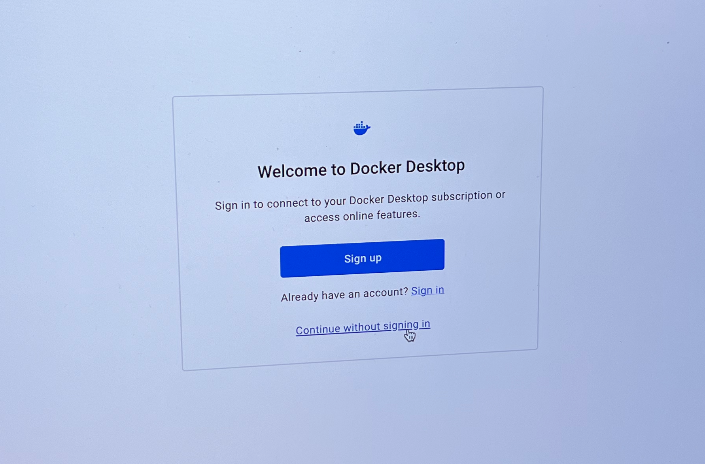

Docker
Please ensure that you have installed WSL2 before installing Docker!
Docker is ‘virtualisation’ tool that allows you to run ‘virtual machines’ on your computer’s ‘host’ operating system. That’s a lot of new, probably meaningless words. If you’re one of those people who (understandably) likes to understand what’s going on then here’s how some people define it:
- Google on What is a virtual machine?
- VMWare on What is a virtual machine?
- Microsoft on What is a virtual machine (VM)?
I would suggest reading these while you’re downloading Docker… And then, after you’ve downloaded Docker, you need to:
- Install it – usually this will mean opening the image and either dragging it your Application folder (Mac) or running the installer (Windows)
- Start it running – double-click the Docker icon in your Applications folder to start Docker running.
- Finish setup – once Docker is started, you should see the login screen below. You do not need to create an account (notice
Continue with signing in) and then on all the subsequent questions you canSkip(upper-right corner) answering as well.

You must start the Docker app running before any of the commands below will work. You’ll know that you’ve succeeded when you see the ‘Docker Desktop’ window appear listing ‘downloaded images’ and ‘running containers’.
Downloading the jreades/sds:2024 Image
To test if Docker is installed correctly, you will need either the Terminal (macOS) or the Power Shell (Windows).
Whenever you see a ‘code block’ below, you will also see a ‘clipboard’ icon () in the right. Click that, and the code will be copied to your computer’s ‘clipboard’ so that you can then paste it into the Terminal or Power Shell. That will save you a lot of time and effort.
If your Apple computer has an Intel chipset (see: -> About this Mac -> Processor) or is running Windows:
docker pull jreades/sds:2024If your Apple computer has an M1 or M2 ‘Silicon’ chipset (see: -> About this Mac -> Processor):
docker pull jreades/sds:2024-siliconYou should see a lot of ‘layers’ being copied down – about 10GB worth – so don’t do this over a cellular connection! If that doesn’t happen then you may need to do more reading about Docker.
Starting the sds2024 Container
Once the pull process completes you’ll need to copy+paste the following into the Terminal as the bare minimum for getting up and running:
docker run --rm -d --name sds2024 -p 8888:8888 \
-v "$(pwd):/home/jovyan/work" \
jreades/sds:2024 start.sh jupyter lab \
--LabApp.password='' --ServerApp.password='' --NotebookApp.token=''Once the pull process completes you’ll need to copy+paste the following into the Terminal as the bare minimum for getting up and running:
docker run --rm -d --name sds2024 -p 8888:8888 \
-v "$(pwd):/home/jovyan/work" \
jreades/sds:2024-silicon start.sh jupyter lab \
--LabApp.password='' --ServerApp.password='' --NotebookApp.token=''You should follow this Microsoft guide to ensure that Use the WSL 2 based engine is checked. This may require restarting Docker.
Once the pull process completes you’ll need to copy+paste the following into the Power Shell (note: not into the Command Prompt (cmd)). Note that this is the one-line version for Windows users:
docker run --rm -d --name sds2024 -p 8888:8888 -v "$(pwd):/home/jovyan/work" jreades/sds:2024 start.sh jupyter lab --LabApp.password='' --ServerApp.password='' --NotebookApp.token=''Errors Starting a Container
Many applications assume that the user’s home directory (where your user stores files) has a name that contains only plain-Latin characters (so no Chinese, or even French sometimes!). This can cause the $(pwd) part of the command above to fail. You will see some kind of error about the docker command failing and something about the path being unreadable. Fret not! You also have a Latin ‘alias’ to that directory which you can usually find using the PowerShell; it will be something like C:\Users\a1509\ in which case just replace the $(pwd) with this and you should be good to go.
If you have issues at this point, then you’ll need to do more reading. However, most of you should now be able to connect to the virtual machine by pointing your browser at: localhost:8888 where you should see something like this: